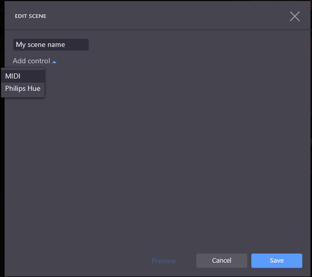
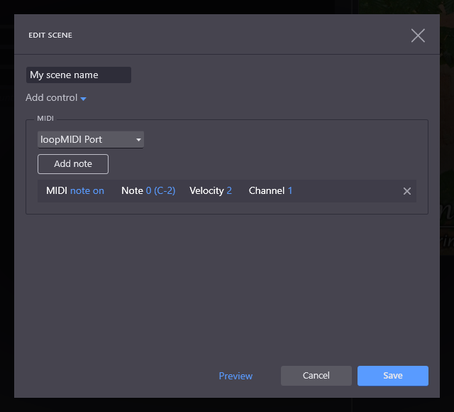

Companion Midi Button Presser

Now you can send a MIDI Note-On message to this module program through the selected MIDI port and cause a button press in Companion.
We use a very simple mapping of Note-On MIDI messages to buttons in Companion:
So, for example, the third button on the top row of the first page of Companion buttons is known within Companion as button 1/0/2 (page 1, row 0, column 2 - pages start at 1, rows and columns start at 0).
To press this button, if your page offset is 0, send a MIDI Note-On message to your selected MIDI port with:
To send this message within Proclaim, go to Settings > Lighting/MIDI and click Add scene. Within the Edit Scene dialog, enter a scene name, and click Add control then MIDI:
 MIDI selected" />
Pick the MIDI port where Companion MIDI Button Presser is listening, then click Add note:
Finally, leave the first option as note on, pick the button row number as the Note, the button column number as the Velocity, and page number as the Channel. For example, to press Companion button 1/0/2:

You can use the Preview link to test the scene, then save it.
Finally, you can attach your scene to an item/slide in Proclaim in the edit view by going to the Signals tab and clicking Add Signal > Lighting and picking the Scene name you entered.